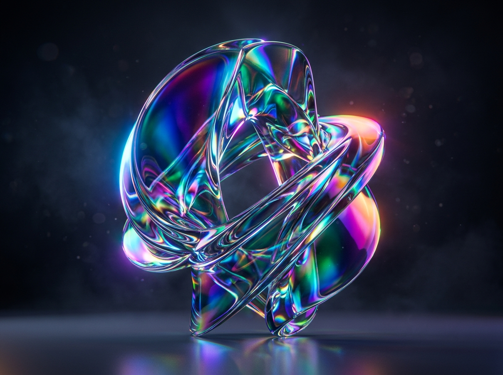
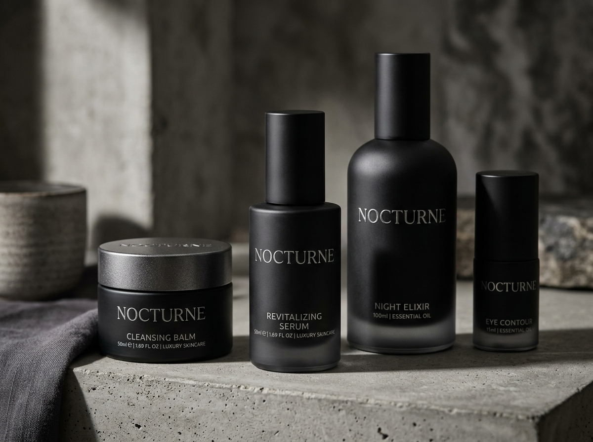
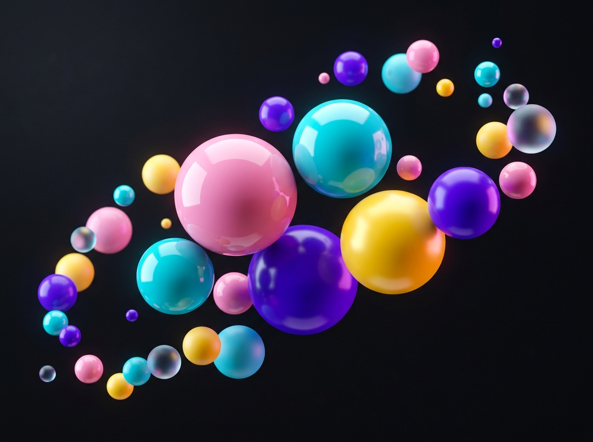

NOCTURNE
A luxury haute-botanical beauty and fragrance identity system exploring bespoke typography and tactile packaging architecture.

PROJECT OVERVIEW
Nocturne required a monolithic visual identity system that stood defiantly apart from traditional ornate perfumery. The challenge was to communicate rare nocturnal florals, dark minerality, and luxury restraint without succumbing to generic minimalism or fleeting trends.
The design challenge was to formulate an uncompromising packaging suite in matte frosted black glass, blind debossed Belgian cotton stocks, and architectural grotesque typography that communicates luxury through restraint.
Distilling the atmospheric allure of midnight botanical extraction into an uncompromising, tactile visual identity and monolithic packaging suite — engineered for both physical permanence and editorial prestige.
DESIGN PROCESS
Discovery & Botanical Research
Conducted comprehensive visual auditing across European fragrance houses and 19th-century botanical apothecary archives. Analyzed raw ingredient palettes—vetiver, black amber, night-blooming jasmine—to build a sensory moodboard rooted in stark contrasts and geological textures.
- Visual competitive matrix of 24 independent fragrance brands
- Material sourcing: FSC-certified unbleached French cotton cardstocks
- Formulated core creative thesis: "Heavyweight Monolithism"
- Analyzed rare nocturnal floral palettes and mineral extractions
Typography & Geometric System
Developed an ultra-extended wordmark featuring razor-sharp structural terminals and balanced optical kerning. Established an editorial grid layout inspired by mid-century Swiss publishing, combining high-contrast serifs with razor-clean grotesque details.
- Bespoke logotype drawing with custom "N" and "R" ligatures
- Dual typographic hierarchy: Architectural Grotesque & Archival Serif
- Comprehensive design token guide across print and digital media
- Optical kerning tables tuned for large-scale packaging foil debossing
Tactile Materiality & Packaging
Engineered physical dielines and vessel silhouettes. Specified matte jet-black frosted glass cylinders paired with weighted gunmetal caps. Designed secondary packaging consisting of a rigid two-piece shoulder box with deep blind debossing and micro-engraved foil seal.
- Precision 1:1 scale dieline drafting and folding mockups
- Hot foil stamp testing on 420 GSM tactile charcoal cotton stock
- Custom tamper-evident holographic seal numbering system
- Matte frosted black glass bottle volume and wall thickness engineering
Refinement & Production Specs
Created complete production-ready prepress files, pantone spot color matching guides, and an 80-page brand guidelines binder. Formulated digital campaign visual direction, studio lighting blueprints, and exhibition art direction.
- Pre-press CMYK + 2 Spot Color separation guidelines
- Digital art direction guide for e-commerce and editorial showcases
- Final prototype presentation deck delivered to client leadership
- Archival binder with material finish swatches and prepress proofs
FINAL DELIVERABLES
Monolithic fragrance vessel & outer packaging architecture

Bespoke typographic specimen & spatial grid system
Matte frosted glass, blind deboss & archival cotton stock

Embossed foil medallion & tamper-evident seal

Atmospheric digital platform design

Complete brand identity suite